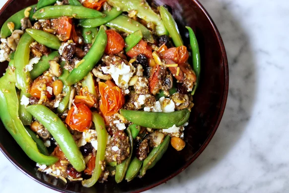

Stir Fry

Description
Perfect quick side dish for almost any meal. I recommend it with grilled chicken, peanut butter quinoa, rice, beans, avocado, etc. Can also be served as a vegetarian main.
Ingredients
- 1 serving cooking spray
- ½ cup sugar snap peas
- ¼ cup cherry tomatoes, halved
- ½ cup dried fruit and nut mix, such as cranberries, almonds, and cashews
- ¼ cup chopped mushrooms
- ¼ cup bell pepper, thinly sliced
- 2 tablespoons chia seeds
- 2 teaspoons cayenne pepper, or to taste
- 1 tablespoon garlic, minced
- salt to taste
- 3 tablespoons egg whites
- 2 tablespoons shredded Cheddar cheese, or as desired